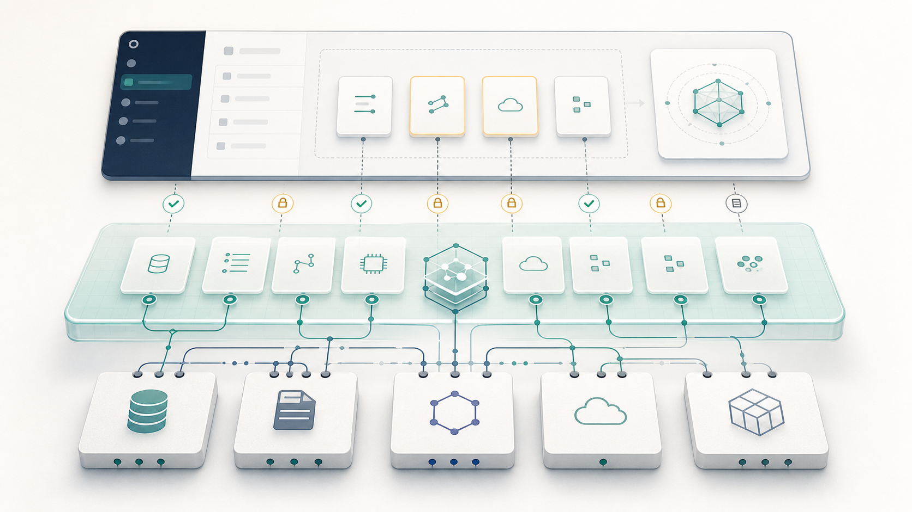
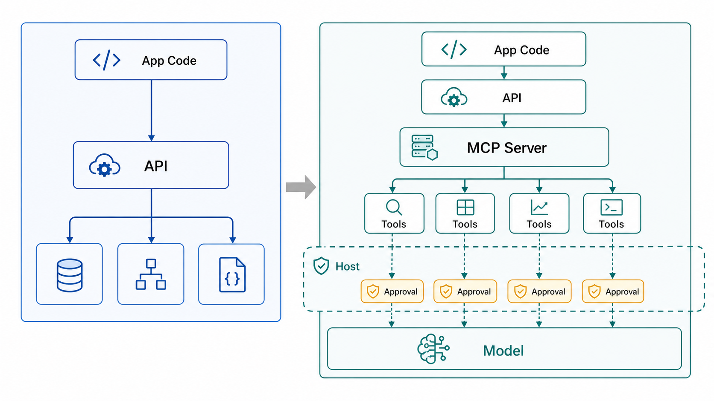

MCP는 API를 대체하지 않는다
MCP 이야기를 하다 보면 가장 먼저 나오는 질문이 있다.
MCP가 API를 대체하는 걸까?
제 생각에는 이 질문 자체가 약간 빗나가 있다. MCP는 API를 없애는 기술이라기보다, API를 모델이 이해하고 안전하게 사용할 수 있도록 다시 포장하는 계층에 가깝다.
API는 여전히 시스템이 실제로 동작하는 기반이다. 데이터는 API를 통해 읽히고, 작업은 API를 통해 실행되며, 권한과 인증도 대부분 기존 시스템 위에서 처리된다. MCP가 바꾸는 것은 그 아래의 실행 기반이 아니라, 모델에게 그 기능을 어떤 형태로 보여줄 것인가에 더 가깝다.
짧게 말하면 이렇다.
API는 integration을 위한 인터페이스이고, MCP는 delegation을 위한 인터페이스다.
API는 시스템을 서로 연결하게 해준다. MCP는 그 연결된 기능을 모델에게 어디까지 맡겨도 되는지 정리해준다.

그림: API는 시스템을 연결하는 실행 기반이고, MCP는 그 기능을 host가 통제 가능한 capability로 노출하는 계층에 가깝다.API는 죽지 않았다
전통적인 API는 아주 강력한 추상화다. 어떤 endpoint에, 어떤 method로, 어떤 payload를 보내면, 어떤 response가 돌아오는지 정한다. 개발자는 문서를 읽고, 필요한 endpoint를 고르고, 인증을 붙이고, 에러 처리를 코드로 작성한다.
이 구조는 개발자가 클라이언트일 때 잘 작동한다.
예를 들어 어떤 앱이 사용자의 캘린더 일정을 읽어야 한다면, 개발자는 캘린더 API 문서를 보고 적절한 endpoint를 호출한다. 페이지네이션이 있으면 처리하고, rate limit이 있으면 재시도 로직을 넣고, 권한이 부족하면 사용자에게 다시 인증을 요청한다.
여기서 중요한 점은 API 문서를 읽고 판단하는 주체가 사람이라는 것이다. 정확히는 사람이 작성한 프로그램이다.
그래서 API는 보통 이런 질문에 답한다.
- 어떤 endpoint가 있는가?
- 어떤 parameter가 필요한가?
- 어떤 response가 돌아오는가?
- 어떤 error code가 있는가?
- 인증은 어떻게 하는가?
이것만으로도 대부분의 소프트웨어 통합에는 충분했다. 문제는 클라이언트가 모델이 되기 시작하면서 생긴다.
문제는 API가 아니라 “모델에게 기능을 맡기는 방식”이다
LLM 에이전트는 전통적인 프로그램과 다르게 움직인다.
프로그램은 개발자가 미리 작성한 경로를 따라간다. 하지만 에이전트는 상황에 따라 도구를 발견하고, 고르고, 조합하고, 중간 결과를 보고 다음 행동을 정해야 한다.
예를 들어 사용자가 이렇게 말한다고 해보자.
지난주 회의 내용을 보고, 액션 아이템을 정리해서 초안으로 만들어줘.
이 작업에는 여러 도구가 엮일 수 있다.
- 캘린더에서 회의 찾기
- 회의록 또는 문서 검색하기
- 관련 메시지 읽기
- 액션 아이템 추출하기
- 초안 작성하기
- 필요하면 공유하거나 발송하기
전통적인 API 관점에서는 각각이 별도의 endpoint 호출이다. 하지만 모델 입장에서는 “어떤 endpoint가 있는가”보다 다음 정보가 더 중요하다.
- 이 도구는 무엇을 할 수 있는가?
- 어떤 상황에서 쓰는 도구인가?
- 어떤 입력이 필요한가?
- 결과는 어떤 형태로 돌아오는가?
- 읽기만 하는가, 쓰기도 하는가?
- 외부로 전송되는가?
- 호출 전에 사람 승인이 필요한가?
- 실패하면 어떤 식으로 실패하는가?
즉 모델에게 필요한 것은 단순한 API 목록이 아니라, 사용할 수 있는 capability의 지도다.
API는 기능을 호출할 수 있게 해준다. 하지만 에이전트에게 필요한 것은 호출 가능성만이 아니다. 중요한 것은 사용 가능성이다.
모델이 어떤 기능을 발견하고, 선택하고, 조합하고, 실행해도 되는지 판단할 수 있어야 한다. 그리고 그 과정에서 host는 어떤 도구를 보여줄지, 어떤 호출을 승인할지, 어떤 행동을 막을지 통제할 수 있어야 한다.
이 지점에서 API와 MCP의 차이가 생긴다.
그럼 API 문서만 잘 주면 되지 않을까?
여기서 자연스럽게 이런 질문이 생긴다.
그럼 API 문서를 모델에게 잘 주면 되는 것 아닌가?
어느 정도까지는 가능하다. OpenAPI 스펙을 프롬프트에 넣거나, API endpoint를 function calling 형태로 감싸면 모델이 API를 호출하도록 만들 수 있다. 간단한 도구 몇 개를 붙이는 수준이라면 이 방식으로도 충분히 동작한다.
하지만 에이전트가 실제 업무 흐름 안으로 들어오면 문제가 달라진다.
API 문서는 기본적으로 개발자가 읽기 위한 문서다. 개발자는 문서를 읽고, 어떤 endpoint를 어떤 순서로 호출할지 코드로 고정한다. 인증은 어디서 처리할지, 실패하면 어떻게 복구할지, 어떤 호출은 사용자 승인을 받아야 할지 모두 애플리케이션 로직 안에 직접 구현한다.
반면 에이전트는 매번 같은 경로만 따라가지 않는다. 사용자의 요청과 중간 결과에 따라 도구를 발견하고, 고르고, 조합해야 한다.
이때 모델과 host는 다음을 함께 알아야 한다.
- 이 도구가 어떤 상황에서 쓰이는지
- 입력 schema가 무엇인지
- 결과가 다음 reasoning step에 쓰기 좋은 형태인지
- 읽기 전용인지, 쓰기 가능한지
- 외부로 전송되는 행동인지
- 호출 전에 사용자 승인이 필요한지
- 실패했을 때 어떤 식으로 복구할 수 있는지
- 이 도구가 다른 도구와 어떤 경계 안에서 조합될 수 있는지
API 문서를 그대로 모델에게 주는 방식은 이 정보를 일관된 실행 표면으로 만들지 못한다. 도구마다 설명 방식이 다르고, 권한 경계가 흩어지고, host가 어떤 호출을 허용하거나 막아야 하는지도 매번 별도 로직으로 처리해야 한다.
MCP가 필요한 이유는 여기에 있다.
MCP는 API를 없애는 것이 아니라, API와 데이터 소스를 모델이 사용할 수 있는 tools, resources, prompts 형태로 노출하고, host가 그 노출과 실행을 통제할 수 있게 해준다.
즉 API가 “기능을 어떻게 호출할 것인가”의 계약이라면, MCP는 “모델에게 어떤 기능을 어떤 책임 경계 안에서 맡길 것인가”의 계약에 가깝다.
API와 MCP는 같은 문제를 다른 층위에서 다룬다
API와 MCP의 차이를 가장 단순하게 말하면 이렇다.
API는 시스템이 무엇을 할 수 있는지 설명한다. MCP는 모델에게 무엇을 맡겨도 되는지 설명한다.
이 차이는 작아 보이지만 에이전트 설계에서는 꽤 크다.
API는 보통 시스템 구현 단위에 가깝다. 예를 들어 캘린더 API에는 이런 endpoint가 있을 수 있다.
GET /calendar/eventsPOST /calendar/eventsPATCH /calendar/events/{id}DELETE /calendar/events/{id}
개발자에게는 좋은 인터페이스다. 각 endpoint가 무엇을 하는지 명확하고, 필요한 payload와 response도 문서화할 수 있다.
하지만 모델에게 그대로 보여주기에는 부족하다. 모델에게 중요한 것은 endpoint 이름이 아니라, 그 기능이 어떤 행동인지다. 같은 캘린더 기능이라도 모델에게는 다음처럼 나뉘어 보이는 편이 더 적절할 수 있다.
search_calendar_events- 일정을 검색한다
- 읽기 전용이다
- 자동 호출 가능하다
create_calendar_draft- 새 일정 초안을 만든다
- 사용자의 검토가 필요하다
reschedule_meeting- 기존 일정을 변경한다
- 참석자에게 영향을 줄 수 있다
- 승인 후 실행해야 한다
cancel_meeting- 일정을 취소한다
- 되돌리기 어려운 행동이다
- 기본 차단하거나 명시 승인을 요구한다
내부적으로는 모두 같은 캘린더 API 위에서 구현될 수 있다. 하지만 모델에게 노출되는 단위는 API endpoint와 같을 필요가 없다.
하나의 endpoint가 여러 capability로 쪼개질 수도 있고, 여러 API 호출이 하나의 tool로 묶일 수도 있다. 중요한 것은 구현 단위가 아니라 위임 단위다.
API는 시스템의 실행 단위에 가깝다. MCP capability는 모델의 행동 단위에 가깝다.

그림: API만 있을 때는 애플리케이션 코드가 endpoint 호출을 고정한다. MCP까지 확장되면 API 위의 기능이 tools, host, approval 경계를 거쳐 모델에게 위임 가능한 단위로 노출된다.MCP 구조에서 모델은 혼자 호출하지 않는다
여기서 한 가지를 엄밀히 짚고 넘어가야 한다.
MCP에서 모델이 혼자 서버를 직접 호출하는 것은 아니다. MCP 구조에는 host, client, server가 나뉘어 있다.
Host는 Claude Desktop, IDE, 에이전트 앱처럼 모델을 담고 있는 애플리케이션이다. Client는 host 안에서 특정 MCP server와 연결되는 커넥터다. Server는 tools, resources, prompts 같은 capability를 노출한다.
모델은 host가 제공한 도구 설명을 보고 어떤 도구를 쓸지 판단한다. 하지만 실제 연결, 권한 확인, 사용자 승인, 호출 실행, 결과 전달은 host와 client가 중간에서 관리한다.
그래서 이 글에서 “모델이 도구를 사용한다”는 표현은 모델이 단독으로 네트워크 호출을 한다는 뜻이 아니다. host가 통제하는 실행 환경 안에서 모델이 tool use를 결정한다는 의미에 가깝다.
이 구조가 중요하다.
모델에게 모든 권한을 그대로 넘기는 것이 아니라, host가 어떤 도구를 보여줄지, 어떤 호출을 허용할지, 어떤 결과를 컨텍스트에 넣을지 통제할 수 있어야 한다. MCP는 바로 이 통제 지점을 표준화된 방식으로 만들려는 시도에 가깝다.
MCP의 차별성은 호출이 아니라 위임이다
MCP가 API와 다른 이유는 “API로 못 하던 호출을 할 수 있어서”가 아니다. 대부분의 실제 실행은 여전히 기존 API, 데이터베이스, 파일 시스템, SaaS 연동 위에서 일어난다.
차별성은 호출 능력이 아니라 위임 방식에 있다.
API만 있을 때 통합의 중심은 개발자와 애플리케이션 코드다. 개발자가 API 문서를 읽고, 어떤 endpoint를 어떤 순서로 호출할지 정하고, 권한과 예외 처리를 코드에 넣는다.
MCP가 들어오면 API 위에 모델-네이티브 도구 계층이 생긴다. 기능은 tools, resources, prompts 같은 형태로 노출되고, host는 그 기능을 모델에게 어떻게 보여줄지, 어떤 호출을 승인할지, 어떤 범위까지 허용할지 관리한다.
그래서 API 시대의 질문은 보통 이랬다.
이 시스템을 어떻게 연동할까?
MCP 이후의 질문은 조금 다르다.
이 시스템의 어떤 행동을 모델에게 어디까지 맡길까?
이 질문에는 endpoint보다 더 많은 것이 들어 있다.
- 모델이 이해할 수 있는 이름인가?
- 설명이 충분히 구체적인가?
- 입력 schema가 모호하지 않은가?
- 출력이 다음 reasoning step에 쓰기 좋은가?
- 실패 모드가 설명되어 있는가?
- 권한 범위가 좁게 잡혀 있는가?
- 자동 호출과 승인 필요 호출이 구분되어 있는가?
- 호출 기록을 남길 수 있는가?
즉 MCP 이후의 통합 설계는 “API를 몇 개 붙였는가”보다 “모델에게 어떤 행동 지도를 제공했는가”에 가까워진다.
MCP의 진짜 핵심은 plug-and-play보다 안전한 노출이다
MCP를 설명할 때 “AI 에이전트용 USB-C” 같은 비유가 자주 나온다. 여러 도구를 표준 방식으로 연결할 수 있다는 점에서는 이해하기 쉬운 비유다.
다만 실제 운영 관점에서는 plug-and-play보다 더 중요한 것이 있다. 바로 permission이다.
모델에게 도구를 준다는 것은 단순히 편의 기능을 붙이는 일이 아니다. 모델이 어떤 데이터를 볼 수 있고, 어떤 행동을 할 수 있으며, 어떤 결과를 외부 세계에 남길 수 있는지를 정하는 일이다.
그래서 좋은 MCP 설계는 capability 설명만으로 끝나지 않는다. 최소한 다음 질문에 답해야 한다.
- 이 도구는 읽기 전용인가, 쓰기 가능한가?
- 어떤 리소스 범위까지 접근할 수 있는가?
- 사용자의 계정 전체를 볼 수 있는가, 특정 폴더나 프로젝트만 볼 수 있는가?
- 결과가 외부로 전송되는가?
- 결제, 삭제, 게시, 발송처럼 되돌리기 어려운 행동이 있는가?
- 자동 실행 가능한가, 사람 승인이 필요한가?
- 누가, 언제, 어떤 이유로 호출했는지 로그가 남는가?
AI 에이전트 설계에서는 “무엇을 할 수 있나”만큼이나 “무엇을 하면 안 되나”가 중요하다. 어쩌면 후자가 더 중요할 수도 있다.
모델은 추론을 한다. 하지만 추론하는 시스템에게 모든 행동 권한을 그대로 넘겨도 된다는 뜻은 아니다. 오히려 모델이 판단하고 행동하는 주체에 가까워질수록, capability의 경계와 approval gate는 더 명확해야 한다.
예를 들면 이런 식이다.
- 검색과 조회는 자동 허용
- 문서 작성은 초안까지만 허용
- 외부 공유는 승인 필요
- 삭제, 결제, DB 변경은 기본 차단
- 고위험 호출은 audit log 필수
이 관점에서 MCP는 API wrapper라기보다 permission wrapper이기도 하다.
엔드포인트 사고에서 capability 사고로
MCP가 흥미로운 이유는 통합을 바라보는 질문을 바꾸기 때문이다.
기존의 질문은 보통 이랬다.
어떤 API endpoint를 붙일까?
그래서 통합 설계는 endpoint, payload, auth, error handling 중심으로 진행됐다. 물론 이 질문은 여전히 필요하다. 실제 시스템은 결국 API를 호출해야 하기 때문이다.
하지만 모델을 클라이언트로 두면 앞단의 질문이 달라진다.
모델에게 어떤 capability를 어떤 권한으로 노출할까?
이 질문은 endpoint보다 한 단계 위에 있다.
예를 들어 이메일 기능을 생각해보자. 내부적으로는 하나의 이메일 API를 쓰더라도, 모델에게는 다음 capability들이 서로 다르게 노출되어야 한다.
- 이메일 검색
- 이메일 본문 읽기
- 이메일 초안 작성
- 이메일 발송
- 첨부파일 다운로드
- 외부 수신자에게 전달
- 이메일 삭제
이 기능들은 같은 API 위에서 구현될 수 있다. 하지만 모델에게 맡길 때는 같은 위험도를 가진 행동이 아니다.
검색과 읽기는 상대적으로 낮은 위험의 read-only capability다. 초안 작성은 사용자의 검토를 전제로 할 수 있다. 발송은 외부 전송이므로 승인 게이트가 필요하다. 삭제나 대량 발송은 아예 막거나 별도 권한을 요구해야 할 수도 있다.
이렇게 보면 MCP의 핵심은 “API 호출을 자동화한다”보다 “기능을 모델이 이해할 수 있는 단위로, 권한과 함께 노출한다”에 더 가깝다.
MCP는 API 위에 있다
그래서 저는 “MCP vs API”라는 표현이 조금 오해를 만든다고 생각한다.
더 정확한 표현은 “MCP on API”에 가깝다.
MCP server는 기존 서비스나 데이터 소스 옆에 붙어, 그 기능을 모델이 사용할 수 있는 도구 형태로 노출한다. 그 아래에서는 여전히 기존 API, 데이터베이스, 파일 시스템, SaaS 연동이 움직인다.
다만 모델에게는 raw endpoint가 아니라 host가 선택적으로 제공한 capability 설명이 보인다.
예를 들어 내부적으로는 여러 API 호출이 필요하더라도, 모델에게는 search_documents, create_draft, summarize_thread 같은 도구로 보일 수 있다. 반대로 하나의 API endpoint라도 위험도에 따라 여러 capability로 쪼개 노출할 수 있다.
중요한 것은 구현 단위와 노출 단위가 반드시 같을 필요는 없다는 점이다.
API는 시스템의 실행 단위에 가깝다. MCP capability는 모델의 행동 단위에 가깝다.
이 둘을 혼동하면 MCP를 “API를 더 쉽게 호출하는 방법” 정도로만 이해하게 된다. 물론 그런 효과도 있다. 하지만 더 중요한 변화는 모델에게 도구를 설명하고, 제한하고, 감사할 수 있는 표준화된 표면이 생긴다는 점이다.
앞으로 중요한 것은 API 문서가 아니라 capability map이다
API 문서는 계속 중요하다. 개발자는 여전히 API를 설계하고, 구현하고, 운영해야 한다. 인증, rate limit, latency, error handling, backward compatibility 같은 문제도 사라지지 않는다.
다만 AI 에이전트가 실제 작업 흐름에 들어오면, API 문서만으로는 부족해진다.
모델과 host에게는 다음과 같은 정보가 함께 필요하다.
- 무엇을 할 수 있는지
- 언제 써야 하는지
- 어떤 입력이 필요한지
- 어떤 결과를 기대할 수 있는지
- 어떤 권한 안에서만 써야 하는지
- 어떤 호출은 승인 받아야 하는지
- 실패하면 어떻게 복구해야 하는지
결국 MCP가 던지는 질문은 기술 표준 하나를 도입할지 말지에 그치지 않는다.
더 근본적인 질문은 이것이다.
우리는 모델에게 어떤 capability를 어떤 책임 경계 안에서 맡길 것인가?
이 질문에 답하지 않은 채로 도구만 많이 붙이면, 에이전트는 똑똑해지기보다 위험해질 가능성이 크다. 반대로 capability와 permission을 잘 설계하면, 모델은 더 많은 시스템을 다루면서도 더 예측 가능한 방식으로 움직일 수 있다.
그래서 MCP는 API의 대체재가 아니다. 기존 API와 데이터 소스를 모델이 이해하고 host가 통제할 수 있는 capability 형태로 재포장하는 모델-네이티브 통합 계층이다.
앞으로 중요한 것은 “어떤 API를 붙였는가”가 아니라, “모델에게 어떤 capability map을 제공했는가”가 될 것 같다.